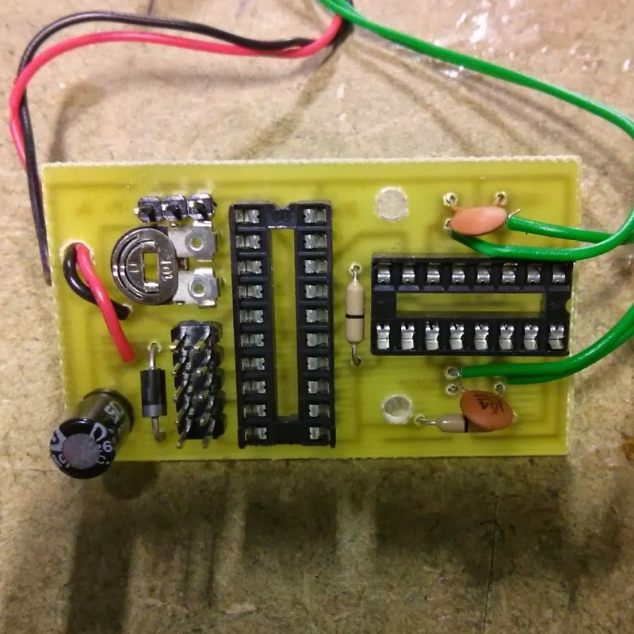
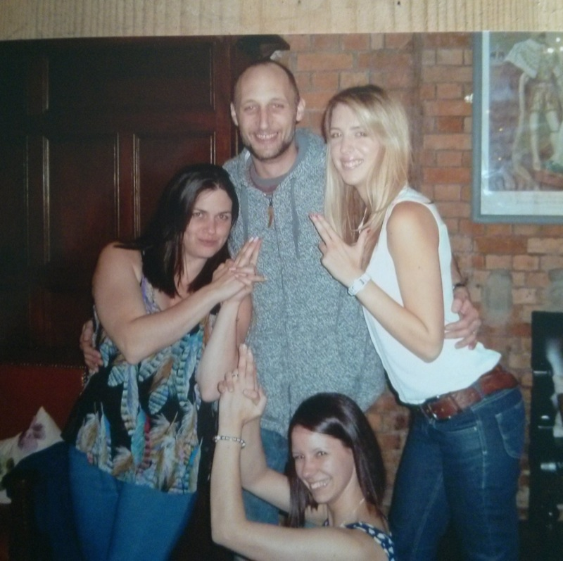
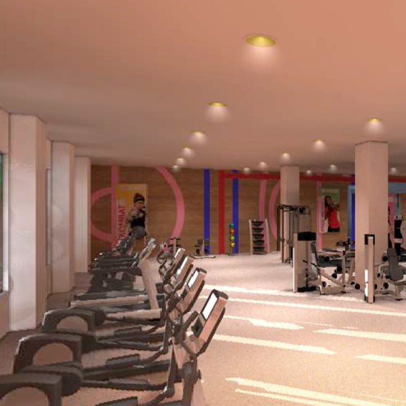
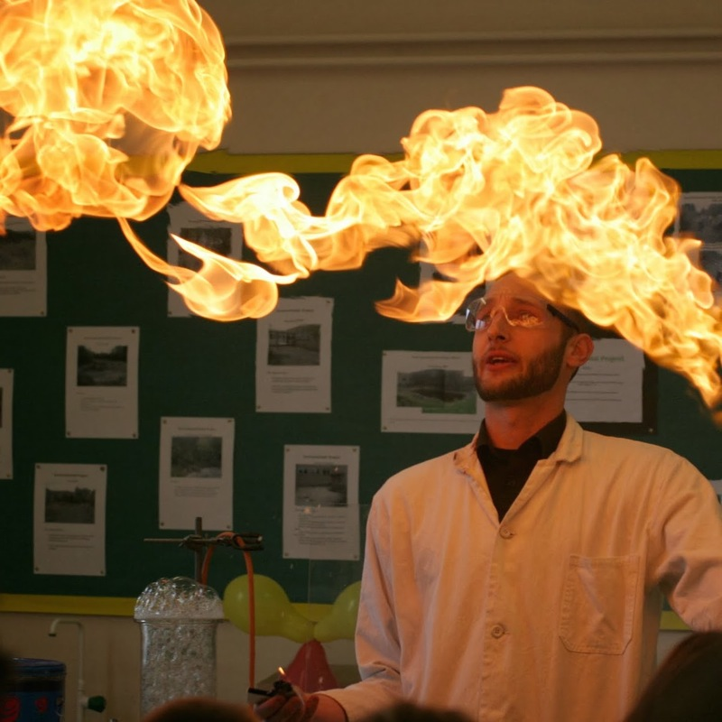
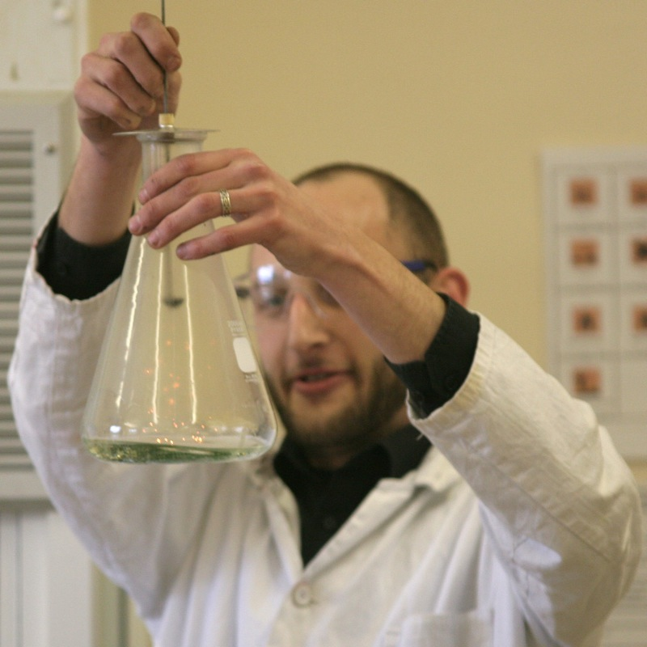

Teacher of Computing and Systems & Control - BGS
September 2013 - Present
Currently the KS3 Coordinator for Systems & Control and the KS3 and 4 Coordinator for Computing at Bourne Grammar School. I've turned the curriculum on its head since September, switching the school from ICT to Computing in a Big-Bang approach. Our students start their coding journey with Scratch, before transitioning to HTML/CSS and then jquery. By Year 8 our students are coding in Python using Sublime Text and diving into the Pygame and Tkinter libraries.

Curriculum and Network Manager - SHSCC
September 2009 - August 2013
Managed a team of between three and five teachers and two network technicians. While continuing to improve GCSE and A-Level results, I transitioned the school from an ICT curriculum and began to introduce Computing. Simultaneously, I was responsible for the stability, security and development of the school's computer network. My greatest accomplishment, however, was building such a hardworking, cooperative and supportive team of teachers.

2007 - 2008
Sole 3D graphic artist at a small design agency. I produced 3D architectural and product visualisations and animations for a variety of sales and marketing teams.

KS4 Science Coordinator -SHSCC
2003 - 2005
Introduced the new GCSE Science Curriculum and was responsible for resourcing the course with new teaching materials for the team to use. I succeeded in moving the school away from the traditional use of textbooks, and while developing my graphic and web design skills, I produced digital resources for use with the course.

Teacher of Physics and Chemistry -KSCS
2001 - 2003
Taught Science, particularly Chemistry and Physics, up to A-Level, and acted as deputy head of Year 8, looking after the pastoral needs of the students.
1999 - 2001
Under the auspices of VSO, I taught for two-years in the remote town of Kiunga, PNG. This was an exceptionally challenging role, as the school was under-resourced and lacked finances. I developed a science curriculum for the school and all the teaching and learning resources.